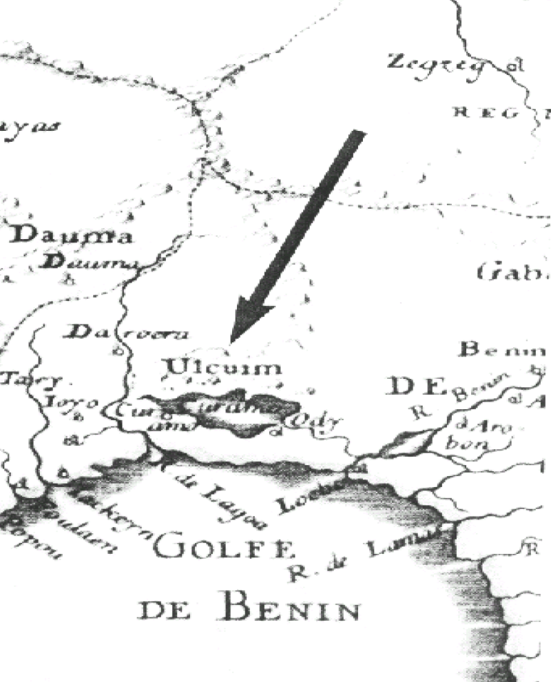

Aluyá Oni Changó
Canto: Alùjá ò ní Ṣàngó, làkì làkì, Òrìṣà Ẹyọ
Traducción: Alujá es de Ṣàngó, ¡valiente!, el orisha de la alegría.…
Observaciones: Alùjá es un tipo de ritmo rápido, vibrante y enérgico asociado a Ṣàngó.
Canto: Alùjá mí Ṣàngó mí o, a kí àdó
Traducción: ¡El alùjá sacude a mi Ṣàngó! Saludamos la calabaza sagrada.
Observaciones: Sacudir, vibrar, mover (pronombre objetivo "mí"). La calabaza es un pequeño recipiente cargado de ashé.
Canto: Ma wò’Òrìṣà Ẹyọ
Traducción: Voy a contemplar al Òrìṣà Ẹyọ
Observaciones: .